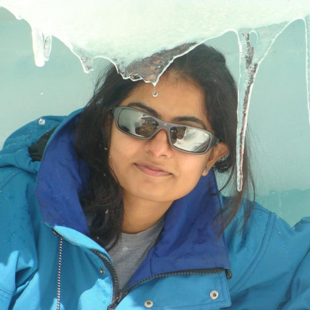

|  | Roseline Cutting ThakurPost Doctoral Researcher Email:-roseline.thakur@helsinki.fi |
2008 M.Sc (Environment Management),Forest Research Institute, Dehradun. Uttrakhand
2006 B.Sc (Botany, Zoology & Chemistry), Ewing Christian College, Allahabad University,Allahabad, Uttar Pradesh
2003 High school and Intermediate (ICSE), St. Marys Convent Inter College, Allahabad
2018 Post Doctoral Researcher. INAR, University of Helsinki
2012 Ph.D Scholar, National Centre for Antarctic and Ocean Research, Goa
2011 Senior Research Fellow, National Centre for Antarctic and Ocean Research, Goa
2009 Junior Research Fellow, National Centre for Antarctic and Ocean Research, Goa
2009 Environment Research Officer, Grass Root Research & Creation Pvt.Ltd,New Delhi
2008 Dissertation Student at National Centre for Antarctic and Ocean Research, Goa
| Matlab | 💙💙💙💙💙 | Mass Spectorscopy | 💙💙💙 |
| Lab Analysis | 💙💙💙 | Data Analysis | 💙💙💙 |